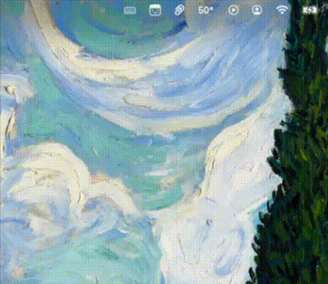

dirtymac
A native macOS menu bar utility that temporarily locks your keyboard so you can clean it without triggering keys. The cursor keeps moving, and a palm on the trackpad scrolls and clicks nothing.
brew install --cask erenmalkoc/tap/dirtymac
- macOS 14 or later
- Offline by default
- MIT licensed
Your mouse and trackpad will be frozen too.
Esc works. You can lock now.
Mode
Mouse will be frozen. Hold Esc for 3s to force unlock.
Before locking
Waits a few seconds after you click Lock.
While locked
Stops the screen from dimming.
While the keyboard is locked, scrolling, gestures and clicks do nothing.
Swipes with three or four fingers are turned off while the keyboard is locked.
Sound
Appearance
Language
Quick Access
Updates
dirtymac takes your privacy seriously.
Help
Why
Wiping crumbs out of a MacBook keyboard usually means dragging a Finder window full of garbage characters and accidentally launching apps. dirtymac suppresses every keystroke at the system event-tap level until you click stop. The cursor keeps moving the whole time, but a palm on the trackpad scrolls and clicks nothing.

Features
Small utility, but thorough about the edge cases.
-
One-click lock
Lock and release straight from the menu bar — no window, no Dock icon.
-
Global shortcut
Open the menu bar panel from any app with ⌃⌥⌘K — change it or turn it off in Settings.
-
Spotlight and Shortcuts
Lock the keyboard or open the panel from Spotlight or the Shortcuts app — even when dirtymac isn't running.
-
Every key, not just letters
Regular keys, modifiers, and the brightness, volume, media and F-key controls are all blocked.
-
Basic mode
The cursor stays live and so does the menu bar icon: click it to release the lock. Scrolling, gestures and clicks elsewhere are ignored, and the trackpad's system swipes are switched off for the lock and put back after.
-
Advanced mode
Optionally freeze the mouse, trackpad and gestures too, pick which key classes to block, and set an auto-unlock timer.
-
Always a way out
Hold Esc for three seconds to release — works even in full lockdown, and finishes when you let go so no stray Esc reaches your app.
-
Honest about Secure Input
When a password field or Terminal's Secure Keyboard Entry stops macOS from letting any app block keys, dirtymac says so instead of pretending.
-
Ends with your session
The lock lets go when your Mac sleeps, the screen locks or users switch.
-
Sound cues
A short sound when the keyboard locks, while you hold Esc and before it unlocks — easy to turn off.
-
Guided first launch
Three-step onboarding with live Accessibility-permission status, plus a one-time What's New after each update.
-
Open at login
Start dirtymac with your Mac — offered during onboarding, changeable any time in Settings.
-
Live status
Elapsed time and auto-unlock countdown while locked. The event tap re-enables itself if macOS times it out.
-
17 languages
Runtime language switching and a light / dark override — no relaunch needed.
-
Nothing leaves your Mac
No network access unless you turn on update checks, no analytics, no background daemons.
Install
macOS 14 (Sonoma) or later.
Homebrew (recommended)
The cask is signed and notarized, and upgrades come through brew.
brew install --cask erenmalkoc/tap/dirtymac
Homebrew 6.0 and later require third-party taps to be trusted first. If you see
Refusing to load cask … from untrusted tap, trust the tap once and retry:
brew trust erenmalkoc/tap
Manual download
Grab the latest signed and notarized DMG, then drag dirtymac.app into
/Applications.
Both the app and the DMG carry their own stapled notarization ticket from 1.1.2 on, so the installed copy verifies with no network at all. To check your copy:
xcrun stapler validate /Applications/dirtymac.app
Permissions
dirtymac needs Accessibility access to intercept keyboard events. On first launch, click the menu bar icon and choose Grant Access. macOS then prompts you to enable dirtymac in System Settings → Privacy & Security → Accessibility. Toggle it on and reopen the popover.
The accessibility tap only swallows events — nothing is recorded, logged or forwarded.
How it works
dirtymac creates a CGEventTap at the session level. The event mask is built
from the active lock configuration: keyDown and keyUp are
always present, while flagsChanged, the aux-control channel behind
brightness / volume / media keys, and the mouse, trackpad and scroll types are added when
the matching toggles are on (Ignore scrolling and clicks, and the Advanced mouse
freeze). The pointer events are tapped a second time at the HID level, before the
session. The callback returns nothing for blocked events, removing them from the system
input queue.
In Basic mode plain mouse movement is not in the mask, so the cursor keeps moving. Clicks, drags, scrolling and gestures are, behind a guard that lets a press through only when it goes down over one of dirtymac's own windows, which keeps the click that opens the menu and releases the lock working. Advanced full lockdown freezes the cursor too, and the universal hold-Esc exit plus a mandatory auto-unlock timer guarantee the lock can always be released. If macOS disables the tap after a timeout, dirtymac re-enables it automatically.
On macOS 27 trackpad scrolling reaches apps without passing any event tap, and the system swipes (Mission Control, Spaces) are handled by the Dock. So during a lock dirtymac also covers every screen with a nearly invisible window of its own, below the menu bar, that takes scrolls and clicks, and switches the trackpad's gesture settings off, writing the original values down first so they come back after every lock and after a crash. The power button cannot be blocked: a press never reaches an event tap, so it still puts the Mac to sleep and ends the lock.
Privacy
dirtymac runs entirely on your Mac. It makes no network connections unless you turn on Settings → Updates → Check for updates, which is off by default. Then, once a day, it asks GitHub for the number of the latest release and nothing else: no identifier, cookie or usage data is sent, and GitHub can see your IP address like any website you visit. There is no telemetry, analytics or crash reporting, and no background process — quitting the app fully releases the keyboard. The hardened runtime is enabled. The app is unsandboxed because the system event tap requires it.